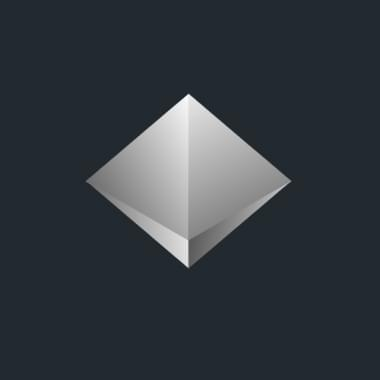

1500 ₽
АНО «Центр проблем аутизма»
Картин10
NFT10 000
Описание фонда
АНО «Центр проблем аутизма» — экспертный центр, автор передовой модели инклюзивной школы и организатор тематической конференции. Организация является официальным центром обучения доказательным методикам коррекции РАС (расстройства аутистического спектра). Помимо образовательной и просветительской деятельности центр помогает семьям с детьми-аутистами, а также участвует в изменении законодательной базы в интересах детей и взрослых с РАС.

Купить NFT очень просто
В нашей галерее вы покупаете pre-NFT. Это ваучер, резервирующий NFT-картину. Для покупки pre-NFT нужна только банковская карта, Web3-кошелёк и криптовалюта не понадобятся. Этот упрощённый вариант покупки NFT подойдёт всем, особенно тем, кто ещё не начал разбираться в технологии Web3. Обменять свой pre-NFT на NFT-токен можно в любой момент при наличии у вас криптокошелька.
Ответы на вопросы

Пожалуйста, расскажите о нас
Популяризация благотворительности – одна из главных задач нашего проекта. Мы будем крайне признательны, если вы поддержите эту идею и расскажете о галерее в своих социальных сетях.
https://tokendobra.ru/main
Что такое pre-NFT?
В нашей галерее вы покупаете pre-NFT. Это ваучер, который гарантирует и резервирует за вами NFT выбранной картины. Такой подход позволяет вовлечь больше людей, так как он не требует наличие web3 кошелька или криптовалюты, что значительно расширяет число потенциальных благотворителей
Как обменять pre-NFT на NFT?Это очень просто! Вы сможете обменять pre-NFT на NFT в любой момент, как только будете готовы (например, обзаведётесь web3 кошельком). После этого вам необходимо будет:
- написать нам письмо на E-mail nft@tokendobra.ru с той почты, которую вы использовали при покупке pre-NFT
- в письме указать полученный вами номер pre-NFT
- а также указать адрес web3 кошелька, куда необходимо будет отправить выпущенный NFT